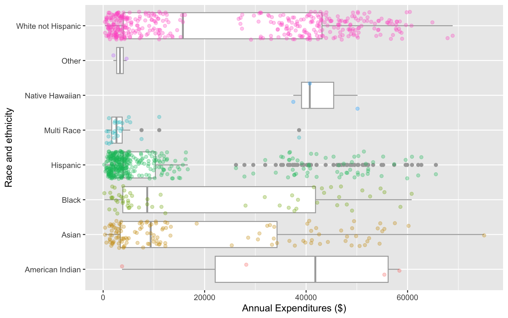
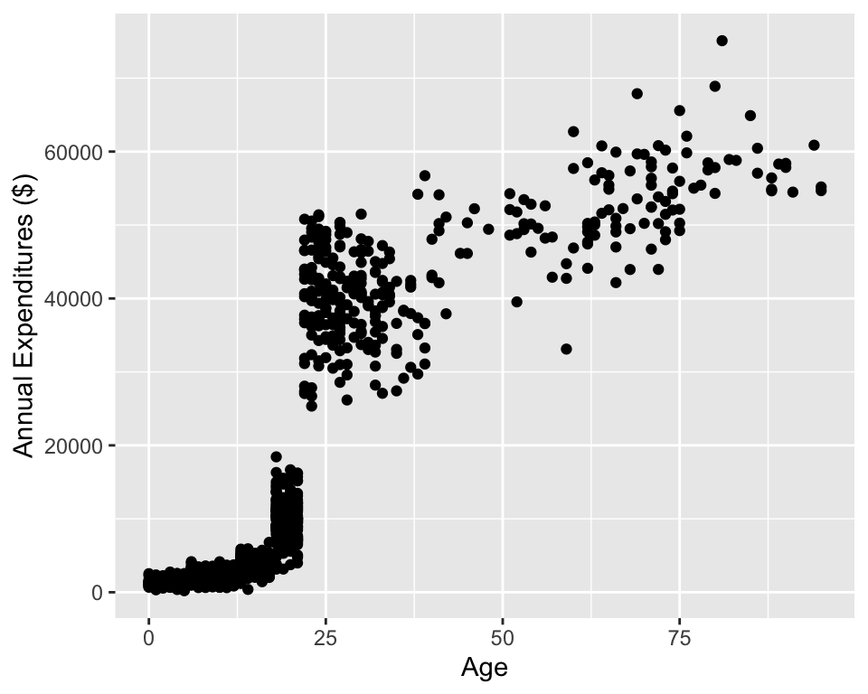
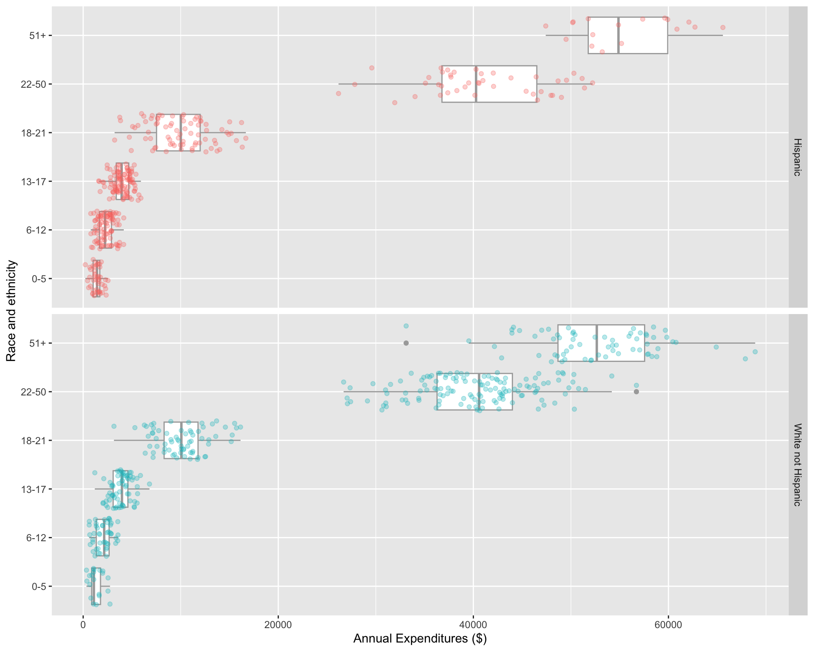

library(oibiostat)
data("dds.discr")Day 3 code: Data visualization
BSTA 511/611, OHSU
Week 2
Back to research question
Case study: discrimination in developmental disability support (1.7.1)
- Previous research
- Researchers examined DDS expenditures for developmentally disabled residents by ethnicity
- Found that the mean annual expenditures on Hispanics was less than that on White non-Hispanics.
- Result: an allegation of ethnic discrimination was brought against the California DDS.
- Question: Are the data sufficient evidence of ethnic discrimination?
Load dds.discr dataset from oibiostat package
The textbook’s datasets are in the R package
oibiostatMake sure the
oibiostatpackage is installed before running the code below.Load the
oibiostatpackage and the datasetdds.discr
the code below needs to be run every time you restart R or render a Qmd file
- After loading the dataset
dds.discrusingdata("dds.discr"), you will seedds.discrin the Data list of the Environment window.
glimpse()
New: glimpse()
- Use
glimpse()from thetidyversepackage (technically it’s from thedplyrpackage) to get information about variable types. glimpse()tends to have nicer output fortibblesthanstr()
library(tidyverse)
glimpse(dds.discr) # from tidyverse package (dplyr)Rows: 1,000
Columns: 6
$ id <int> 10210, 10409, 10486, 10538, 10568, 10690, 10711, 10778, 1…
$ age.cohort <fct> 13-17, 22-50, 0-5, 18-21, 13-17, 13-17, 13-17, 13-17, 13-…
$ age <int> 17, 37, 3, 19, 13, 15, 13, 17, 14, 13, 13, 14, 15, 17, 20…
$ gender <fct> Female, Male, Male, Female, Male, Female, Female, Male, F…
$ expenditures <int> 2113, 41924, 1454, 6400, 4412, 4566, 3915, 3873, 5021, 28…
$ ethnicity <fct> White not Hispanic, White not Hispanic, Hispanic, Hispani…Recall previous data viz
ggplot(data = dds.discr,
aes(x = expenditures,
y = ethnicity)) +
geom_boxplot(color="darkgrey") +
labs(x = "Annual Expenditures ($)",
y = "Race and ethnicity") +
geom_jitter(
aes(color = ethnicity),
alpha = 0.3,
show.legend = FALSE,
position = position_jitter(height = 0.4)) 
ggplot(data = dds.discr,
aes(x = age,
y = expenditures)) +
geom_point() +
labs(x = "Age",
y = "Annual Expenditures ($)") 
Visualize in more detail: ethnicity, age, and expenditures
dds.discr_Hips_WhnH <- dds.discr %>%
filter(ethnicity == "White not Hispanic" | ethnicity == "Hispanic" ) %>%
droplevels() # remove empty factor levels
ggplot(data = dds.discr_Hips_WhnH,
aes(x = expenditures,
y = age.cohort)) +
geom_boxplot(color="darkgrey") +
facet_grid(rows = "ethnicity") +
labs(x = "Annual Expenditures ($)",
y = "Race and ethnicity") +
geom_jitter(
aes(color = ethnicity),
alpha = 0.3,
show.legend = FALSE,
position = position_jitter(
height = 0.4)) 
Mean annual DDS expenditures by race/ethnicity
default long format
mean_expend <- dds.discr_Hips_WhnH %>%
group_by(ethnicity, age.cohort)%>%
summarize(ave = mean(expenditures))
mean_expend# A tibble: 12 × 3
# Groups: ethnicity [2]
ethnicity age.cohort ave
<fct> <fct> <dbl>
1 Hispanic 0-5 1393.
2 Hispanic 6-12 2312.
3 Hispanic 13-17 3955.
4 Hispanic 18-21 9960.
5 Hispanic 22-50 40924.
6 Hispanic 51+ 55585
7 White not Hispanic 0-5 1367.
8 White not Hispanic 6-12 2052.
9 White not Hispanic 13-17 3904.
10 White not Hispanic 18-21 10133.
11 White not Hispanic 22-50 40188.
12 White not Hispanic 51+ 52670.wide format
mean_expend_wide <- mean_expend %>%
pivot_wider(names_from = ethnicity,
values_from = ave)
mean_expend_wide# A tibble: 6 × 3
age.cohort Hispanic `White not Hispanic`
<fct> <dbl> <dbl>
1 0-5 1393. 1367.
2 6-12 2312. 2052.
3 13-17 3955. 3904.
4 18-21 9960. 10133.
5 22-50 40924. 40188.
6 51+ 55585 52670.Differences in mean annual DDS expenditures by age cohort and race/ethnicity
mean_expend_wide <- mean_expend_wide %>%
mutate(diff_mean = `White not Hispanic` - Hispanic)
mean_expend_wide# A tibble: 6 × 4
age.cohort Hispanic `White not Hispanic` diff_mean
<fct> <dbl> <dbl> <dbl>
1 0-5 1393. 1367. -26.3
2 6-12 2312. 2052. -260.
3 13-17 3955. 3904. -50.9
4 18-21 9960. 10133. 173.
5 22-50 40924. 40188. -736.
6 51+ 55585 52670. -2915. Question: Are the data sufficient evidence of ethnic discrimination in DDS expenditures when comparing Hispanics with White non-Hispanics?
Summary of data wrangling so far
- The pipe
%>%to string together commands in sequence mutate()to add a new variable to a datasetselect()to select columns (or deselect columns with -variable)filter()to select specific rowspivot_wider()to reshape a dataset from a long to a wide format
Summarizing data
tabyl()fromjanitorpackage to make frequency tables of categorical variablessummarize()to get summary statistics of variablesgroup_by()to group data by categorical variables before finding summaries